Pictures from Cripple Creek, Colorado
These are pictures taken at the museum.
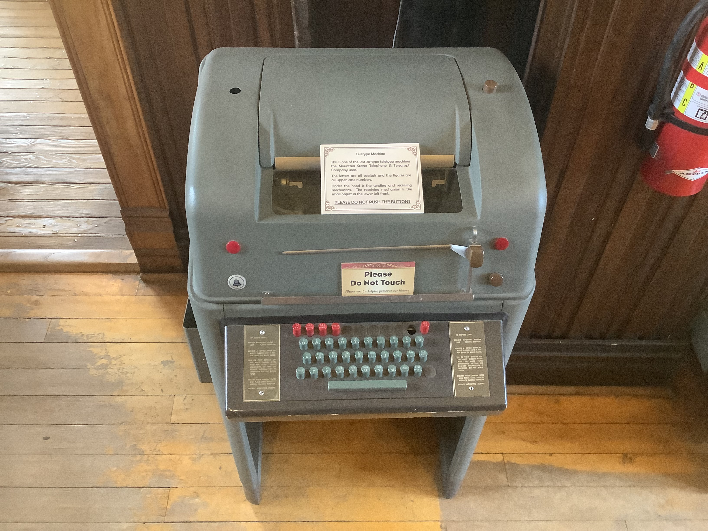 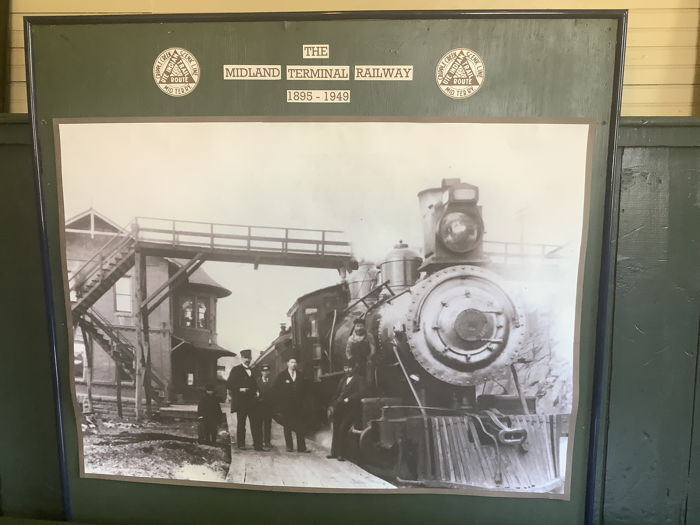This is a Teletype Machine that is on display in the museum. Also seen is a picture of a train by the depot.
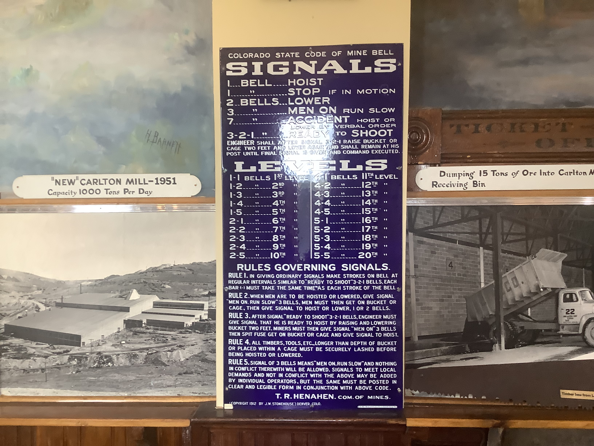 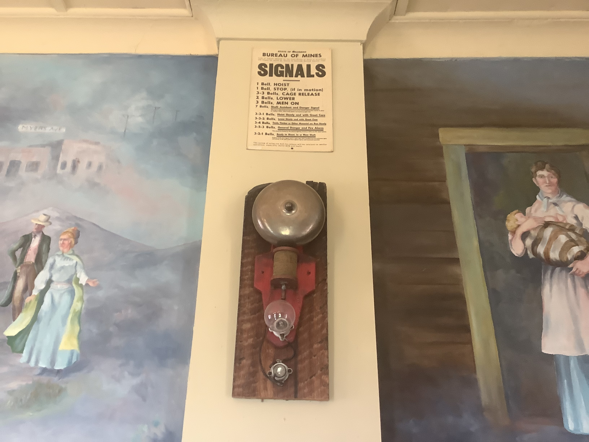The Rules, Signals, and Codes on the Colorado State Code of Mine Bell. Next to that is a signal bell.
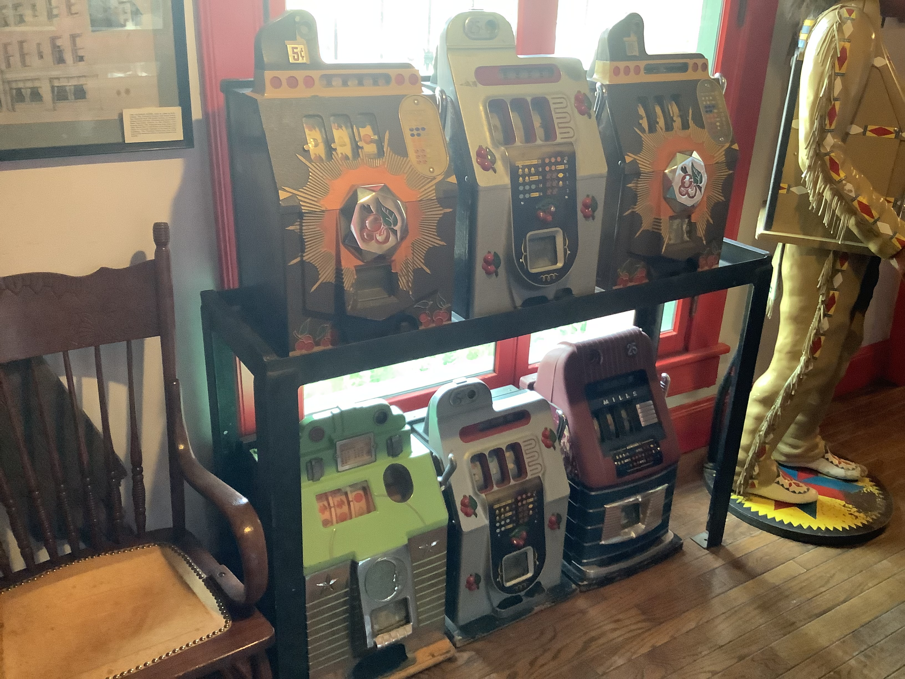 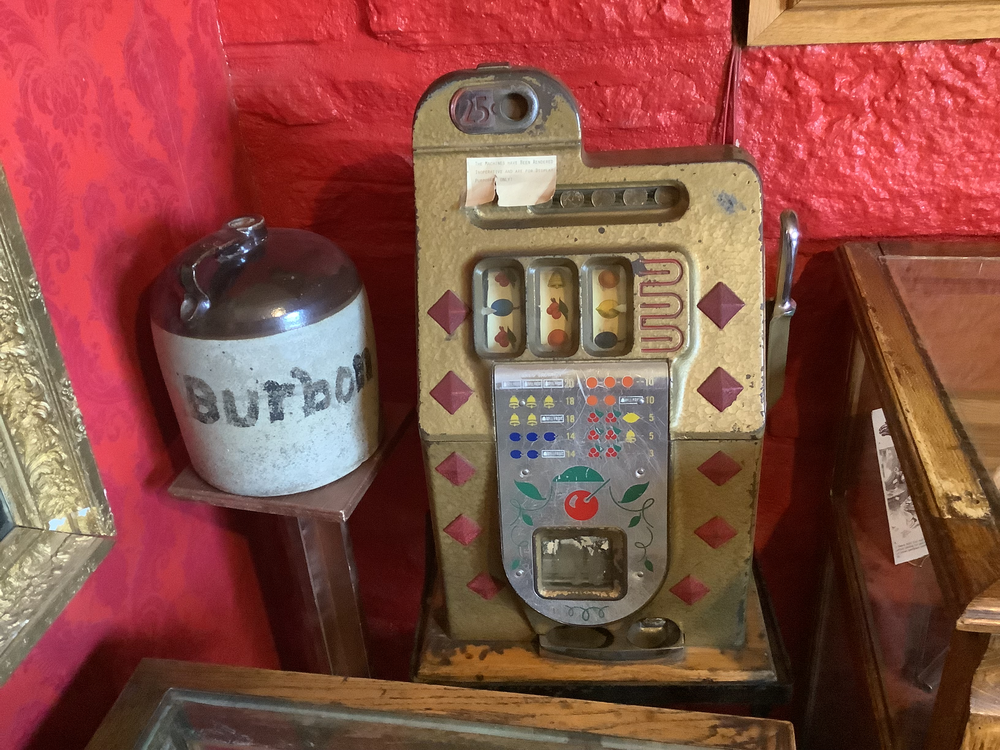These are old jackpot machines that are on display with a jukebox next to it.
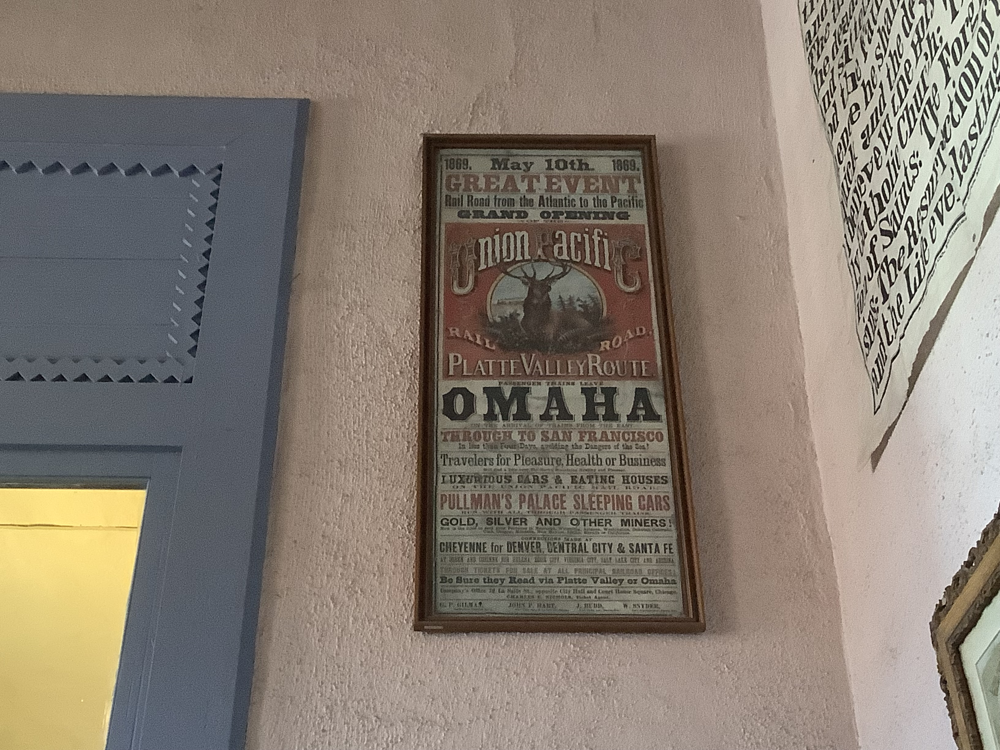 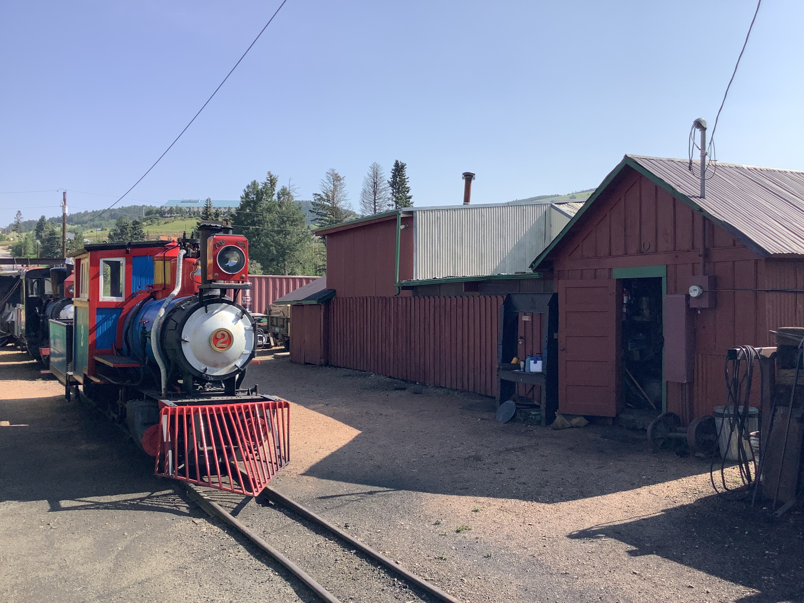This is an original poster telling people about the great event on May 10, 1869. This date is significant because it is the day that our country was joined from east to west by the Central Pacific railroad and the Union Pacific.
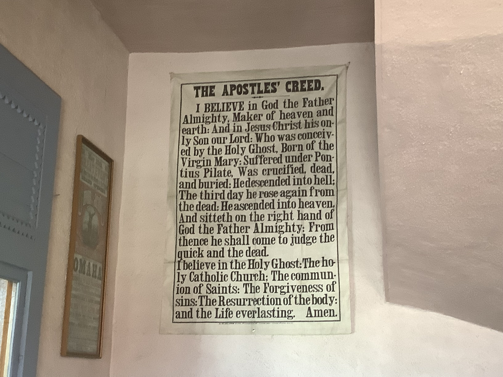 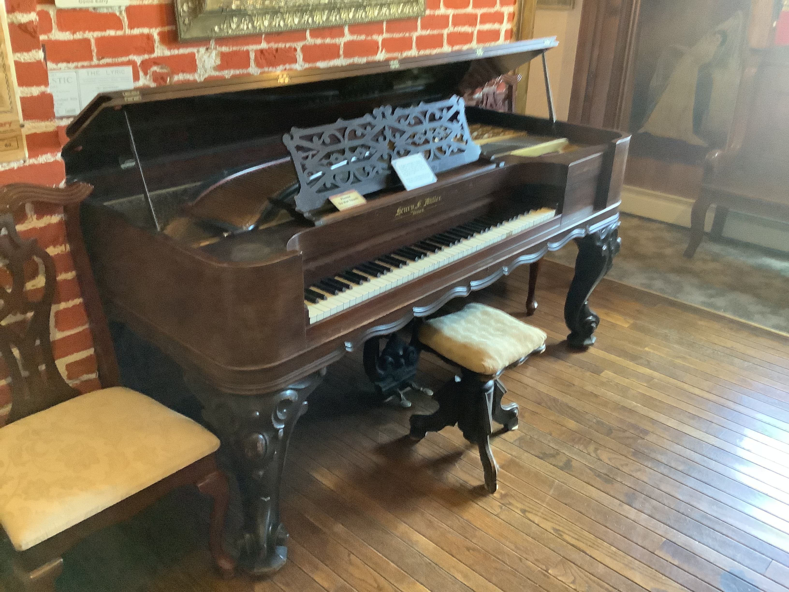This the old Apostles Creed banner made before the one we have today that is on display. Also on display is an old-fashioned piano.
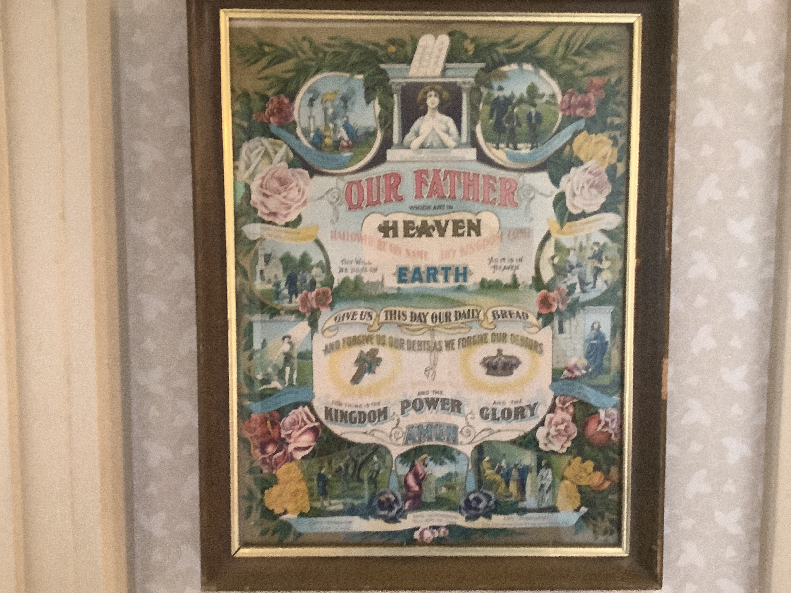 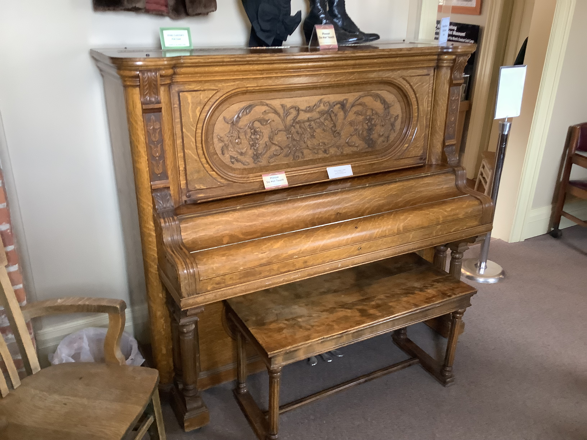This is an old Lord's Prayer Picture made before the one we have today. Another item on display is an old organ.